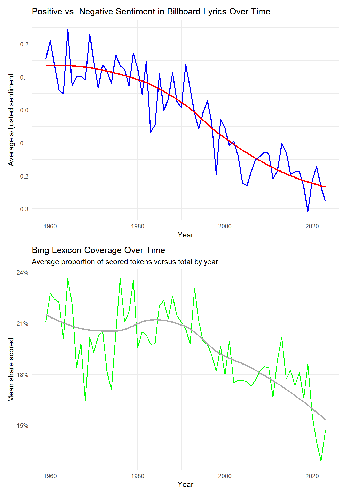
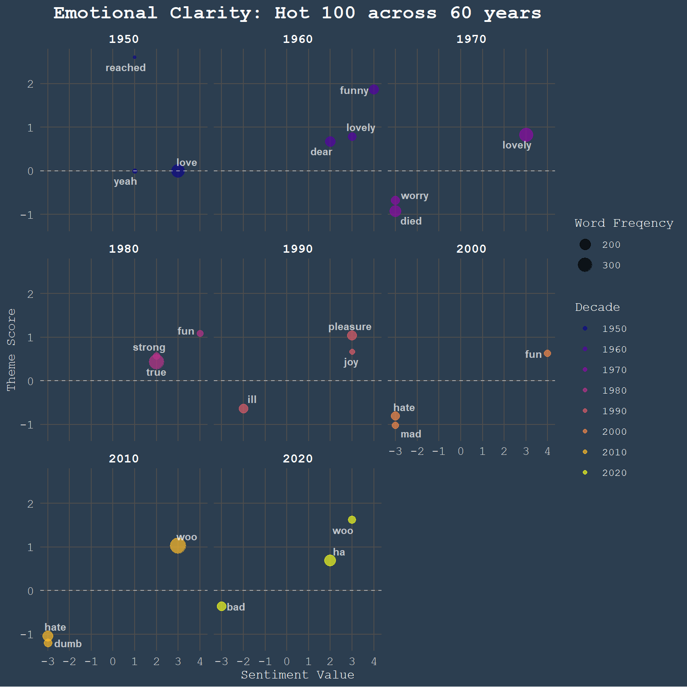

Nick Katz and I used Billboard Hot 100 lyrics to look at how the language and sentiment of popular songs changed across decades. The project is very much a class text-analysis project: clean the text, tokenize it, measure sentiment, and see what patterns survive the usual dataset mess.
The source QMD and local data file live in this page’s repo folder, learning/datacomp/text-analysis/. The full lyrics CSV is kept there for rendering, but it is not linked as a public website download.
People often like to joke that modern culture and media has gotten bleaker with each passing year: we always find more things to be sad and angry about, and being happy given the “current state of the world” is just too “immature” of someone. But is this often-repeated claim even true? In this blog post, we use lyrics from Billboard’s Hot 100 songs from 1959 to 2023 to test whether this cultural sentiment is reflected in songs - one of the most public ways humans can express their attitudes and feelings. From a public dataset, we clean and tokenize the lyrics ourselves, measure sentiment and analyze themes of songs from different eras.
Data and Methods
Dataset
The dataset for our analysis was compiled from Brian Blakely and distributed through Kaggle. Though the source folder contains 3 files, we will carry out our analysis on the raw data file.
Methods
With our favorite packages loaded, we first import the dataset:
Though common practices would suggest us to examine the entire first few rows out of the dataframe’s 6500, the contents of most columns are dense strings of text, which would not lend well to inspection through head().
Cleaning the Lyrics
Before tokenizing the dataset, we first examine how the Lyrics column appears in the raw file.
line <- songs |>select(Lyrics)
Since our project relies on token-based methods like sentiment analysis, it is important that the text we analyze reflects the lyrics instead of material added during scraping or formatting. In many songs, the Lyrics field includes structural labels, metadata, and other textual artifacts that are not part of the lyrical content. If left untouched, they could enter the token counts and affect later summaries and sentiment scores. Hence, we should try to remove these artifacts as much as we reasonably can.
In the codechunk below, our regular expressions are designed to remove:
section labels in square brackets or braces, such as [Chorus], [Verse 1], or [Bridge]
parenthetical section markers such as (chorus) or (intro)
standalone structural labels such as VERSE or Chorus:
metadata prefixes such as Artist: or Written by:
chart-position and ranking text, such as Peaked at number 15 in 1963
extra whitespace left behind after these removals
Using str_remove_all(), we remove several common classes of artifacts:
lyrics_clean <- songs_clean |>mutate(# Remove anything inside square brackets, e.g. [Chorus] or [Verse 1]lyrics =str_remove_all(lyrics, "\\[[^\\]]+\\]"),# Remove anything inside curly braces, e.g. {Verse} or {Intro}lyrics =str_remove_all(lyrics, "\\{[^\\}]+\\}"),# Remove parenthetical section labels, but not (oh) or (joe jonas)lyrics =str_remove_all( lyrics,regex("\\((verse|chorus|bridge|outro|intro|hook|refrain)[^\\)]*\\)",ignore_case =TRUE ) ),# Remove standalone structural labels such as VERSE or Chorus:lyrics =str_remove_all( lyrics,regex("\\b(verse|chorus|bridge|outro|intro|hook|refrain)\\b:?",ignore_case =TRUE) ), # where \\b represents the boundary of the word, so each term in the alternation is matched whole, instead of matching "verse" in "reverse"# Remove leading metadata labels such as Artist: or Written by:lyrics =str_remove_all( lyrics,regex("^(artist|written by)\\s*:\\s*", ignore_case =TRUE) ), # where \\s* allows for different numbers of spaces before/aft colon# Remove common chart-position phraseslyrics =str_remove_all( lyrics,regex("peaked at number \\d+ in \\d{4}", ignore_case =TRUE) ), # where \\d is a digit# Remove decorative music-note symbols, recurrent artifactlyrics =str_remove_all(lyrics, "♫"),# Collapse extra spaces into single spaceslyrics =str_squish(lyrics) )
Note that for most of the expressions below, we pass the additional argument ignore_case = TRUE. This enables us to remove different spellings of the same expression without having to list them out sequentially. Additional notes about regular expressions can be examined in the codechunk’s comments.
Tokenization and Stop Words Removal
Having removed the majority of the artifacts in the lyrics of the song, we proceed with tokenization, and remove stop words - expressions that do not contribute to the general theme/sentiment of the song. This is made possible by the stop_words dataframe, available in the tidytext library.
# as seen in classwork filessong_words <- lyrics_clean |>unnest_tokens(output = word, input = lyrics, token ="words")words_clean <- song_words |>filter(!(word %in% stop_words$word))
The removal of stop words seems to have decimated the number of observations in the dataframe, from some 3.9 million to just shy of 1.5 million observations. While this step is not too unreasonable, it would be good to keep track of the downstream effects this may have on our analyses.
Analysis and Graphics
Sentiment Analysis
To measure emotional tone, we use the Bing sentiment lexicon from the tidytext package. Bing specifically classifies matched words as positive or negative, rather than assigning each word a weighted score. This simplicity is very helpful because we are mainly interested in whether the language contained in popular songs have gotten more negative over the years, and not each song’s emotional valence (something that might be better measured by other lexicons like AFINN or NRC).
# creating corpus and joining with current dfbing <- tidytext::get_sentiments("bing")# inner joiningwords_bing <- words_clean |>left_join(bing, by ="word", relationship ="many-to-many")
After joining the lexicon with our token dataframe, we create relevant song-level sentiment summaries: the total number of scored tokens, how many of them were positive/negative, the proportion of scored tokens versus total. We also calculate the adjusted sentiment score by dividing the net sentiment score by the total number of scored tokens. Mathematically, the ratio can take values between -1 (all scored tokens were negative) and 1 (all scored tokens were positive). Practically, the index would enable fairer comparisons between songs across different lengths and lyrical densities.
# creating a df containing the # of total wordssong_token_counts <- words_clean |>group_by(song, album, artist, year, rank) |>summarize(total_words =n(), .groups ="drop")# merging that with the created sentiment instrumentsong_sentiment_bing <- words_bing |># shorthand for group_by --> summarize(n())count(song, album, artist, year, rank, sentiment) |># pivoting out so each song has 2 cols counting # of +/- wordspivot_wider(names_from = sentiment,values_from = n,values_fill =0 ) |>left_join(song_token_counts, by =c("song", "album", "artist", "year", "rank")) |># now create the ratios we are interested inmutate(total_sentiment_words = positive + negative,prop_scored = total_sentiment_words / total_words,prop_positive = positive / total_sentiment_words,prop_negative = negative / total_sentiment_words,# adjusted net count so songs w/ different lengths/wordcount can be comparedadjusted_sentiment = (positive - negative) / total_sentiment_words )
We can now group songs by year and create graphs plotting the average adjusted sentiment over time, along with the proportion of tokens scored by the Bing lexicon (and their respective smoothed trendlines):
# grouping by year to display thingsyear_sentiment_bing <- song_sentiment_bing |>group_by(year) |>summarize(# avg adjusted net sentimentmean_adj_sentiment =mean(adjusted_sentiment, na.rm =TRUE),# avg prop words scoredmean_prop_scored =mean(prop_scored, na.rm =TRUE),songs_scored =n(),.groups ="drop" )p_sentiment <-ggplot(year_sentiment_bing, aes(x = year, y = mean_adj_sentiment)) +geom_line(color ="blue", linewidth =0.8) +geom_smooth(se =FALSE, color ="red", linewidth =1) +geom_hline(yintercept =0, linetype ="dashed", color ="gray50") +labs(title ="Positive vs. Negative Sentiment in Billboard Lyrics Over Time",x ="Year",y ="Average adjusted sentiment" ) +theme_minimal()p_coverage <-ggplot(year_sentiment_bing, aes(x = year, y = mean_prop_scored)) +geom_line(color ="green", linewidth =0.7) +geom_smooth(se =FALSE, color ="darkgrey", linewidth =1) +scale_y_continuous(labels = scales::percent_format()) +labs(title ="Bing Lexicon Coverage Over Time",subtitle ="Average proportion of scored tokens versus total by year",x ="Year",y ="Mean share scored" ) +theme_minimal()# patchwork call to wrap it all togetherp_sentiment / p_coverage

The plot bears this out: sentiment in Billboard Hot 100 lyrics has trended consistently negative since the late 1950s, crossing into the negatives around the mid-90s and continuing downward through the 2020s. If music truly is one of the more direct expressions of public feeling, this would confirm that the broad mood has become darker. However, the Bing lexicon coverage chart complicates this result. Coverage has fallen from roughly 22% to 15% of tokens – a ~30% relative decline – meaning the lexicon is scoring a shrinking share of each song’s actual vocabulary. This matters because Bing was built on standard English, and as hip-hop and genres drawing on African American Vernacular English came to dominate the charts, the emotional vocabulary shifted in ways the lexicon wasn’t built to handle. As a result, some words go unscored (“lit,” “slay”), while others get scored in the wrong direction – “dope” and “chill” register as negative in Bing, but are widely thought to carry positive connotations nowadays. The negativity trend holds, but the declining coverage muddies the picture – a lexicon better suited to modern vocabulary is needed to make a stronger claim.
tf_idf analysis: A Deep Dive into Theme and Popularity
As we observed in our Bing analysis, the hot 100 has been on a steady emotional decline over the last 60 years. To further investigate this trend, the question of theme becomes very important. If the Bing score was decreasing, we would also expect a change in important word choice. Both actual variation in cultural diction as well as artist backgrounds and general motivations change across time. Espically in the hot 100, a US-based chart, the average listener lived in an entirely different world post WWII and into the Vietnam war compared to a COVID-19 landscape in 2020. To move beyond general sentiment, we must identify the themes— the specific, signature words that define each era. If we combine this with our sentiment analysis, both the general ideas of the songs and their emotional tone can give us some insight into the guts of this negative trend. To find these topics, we use tf-idf (term frequency-inverse document frequency). This statistic reveals words that are frequent in one decade but rare in others, highlighting the trends within popular songs of each decade.
Eliminating profanity
Our first step is to ensure these emotion-finding tools are given the proper data. Swear words, espically with the onset of hip-hop in the 90s and 2000s, are not what we are after. Because of their later introduction to the mainstream, tf_idf calculations will bias them for rarity and prevelance within specific decades. To eliminate this confounding effect, we used a general profanity filter from the lexicon library to filter through 3098 different profane words. This filter included a dataset for racist terms as well.
Now, with our cleaned word data, buckets were created by decade. This allows for us to look at the decade defining trends, with specific changes in diction, language, and culture influencing our most popular words. To ensure we only select our most popular words, a threshold of 100 or more appearances within a decade was chosen. Rare words with few appearances would score disporportionately high, so we limit them. Another refinement came in the form of eliminatinh words with digits, as they cannot be analyzed.
decade_importance <- clean_words_only %>%mutate(decade = (year %/%10) *10) %>%#bin in decadescount(decade, word) %>%#need a count of each word per decadefilter(n >=100) %>%#minimum of 20 per decadefilter(!str_detect(word, "^\\d+")) %>%#eliminates digit-based words (i.e "2018")bind_tf_idf(word, decade, n) #main function: calculates tf:idf score and individual metrics
After grouping by decade and calculating tf_idf values, I wanted to take a look at the highest tf_idf scores within 2010. This would allow for a small view into our values in decade format.
# 2010 top tf_idf scoresidf_2010 <- decade_importance %>%filter(decade ==2010) %>%arrange(desc(tf_idf)) %>%select(word, n, tf, idf, tf_idf) %>%slice_head(n =20)head(idf_2010)
Although these words might represent the vocabulary choices of the decade well, they are not necessarily meaningful. The words “recorded” and “studios” are likely artifacts from the metadata within our dataset. It would be hard to attach a sentiment value to “studios” or “recorded”, even though they shine through the rest as unique across 60 years and common in the 2010s. To get a better gage of useful tf_idf scores, sentiment analaysis compatability must be considered. We want to truly understand the theme of each decade in word choice, with the emotional attachment carrying lots of weight in subsequent analysis and comparison.
Combining theme and sentiment scores
To give us some context into the relationship between sentiment score and tf_idf values, I created a composite score that rewards value. For the sentiment analysis, I used afinn as the explicit lyric removal puts this dataset in a position better equiped than our previous work with bing. Taking the top 3 highest composite scores by decade, the uniqueness and strength of sentiment is compiled into a single number and 3 words for each decade. With this, we can get an idea about the core themes and sentiments within each decade, and see how they evolve.
theme_system_data <- decade_importance %>%inner_join(get_sentiments("afinn"), by ="word") %>%mutate(theme_score = tf_idf * value *100) %>%#to see the interaction between theme and sentiment, I created a score that favors strong emotion and rare, unique words in each decade. the *100 is to scale for graphinggroup_by(decade) %>%slice_max(abs(theme_score), n =3) %>%#refines to the top 5 most unique and emotionally charged (positive or negative) theme scoresungroup()head(theme_system_data)
With our top theme score picks from each decade, we can plot these respective glimpses into the popular music vernacular, and see if it alligns with the general trends found in our bing analysis. Our prediction holds true; more recent decades will likely have more negative theme score words when compared to the 60s,70s, and 80s.

The general trend follows what was shown previously; the 2000s and 2010s have two words each that reach quite low composite scores mainly due to sentiment value. Interestingly, the 70s highlight a break in the generally happy, positive trend. The words “worry” and “died” were quite severe compared to other decades in the 20th century. The last main observation, however, is a positive one! The 2020s, up to 2023 as this dataset’s latest date, seem to be back in happy land. The only negative sentiment scored word, “bad”, has a low composite score, indicating a relatively small tf_idf. Both “woo” and “ha” rate high on sentiment score and composite, a potential indication of a trend towards happier tunes. We also see the change in vernacular highlighted earlier by the coverage graph, with the word “woo” appearing in both the 2010s and the 2020s. This constitutes further investigation into word choice and vocabulary.